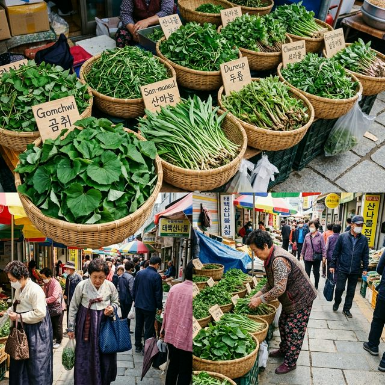
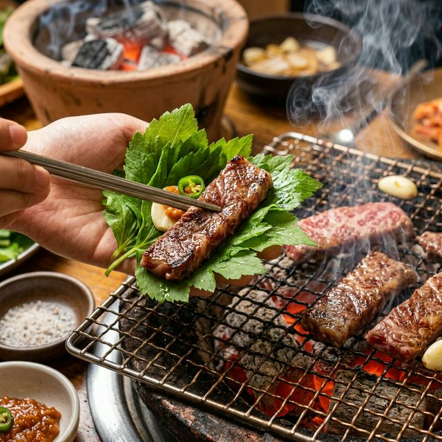
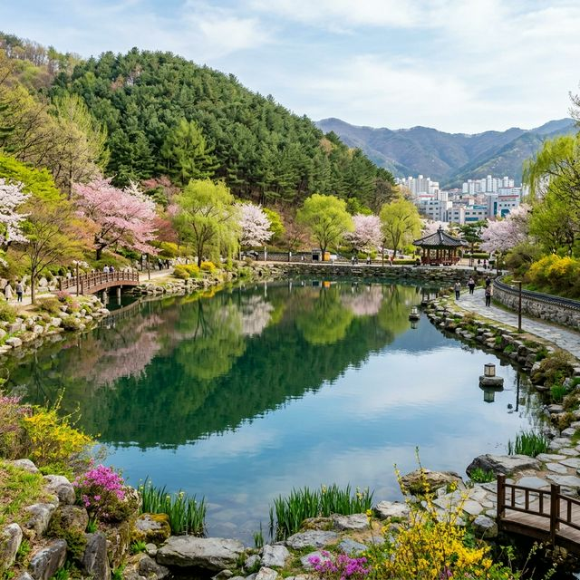

태백 천상의 산나물 축제 일정 및 산지 직송 구매 꿀팁: 강원도 봄나들이 코스
해발 700~900m 고원 지대에서 자라나 '하늘의 선물'이라 불리는 봄나물의 여왕들을 만나러 떠나는 길, 2026 태백 천상의 산나물 축제가 드디어 막을 올립니다.
강원도 태백의 차갑고 맑은 공기를 듬뿍 머금고 자란 산나물들은 그 향과 식감부터 시중의 하우스 재배 산나물과는 차원이 다른 깊이를 자랑합니다. 2026년 4월 24일부터 26일까지 태백 장성탄탄마당
일대에서 펼쳐지는 이번 축제는, 청정 고원의 신선함을 식탁으로 옮겨올 수 있는 최고의 기회입니다. 봄철 면역력을 높여줄 산마늘, 곰취, 어수리 등 귀한 나물들을 착한 가격에 구매하고 태백 한우와
어우러지는 환상적인 맛의 향연을 즐기는 방법을 지금부터 상세히 가이드해 드립니다.
1. 왜 태백 산나물인가? '천상의 향기'가 다른 이유
태백은 우리나라에서 가장 높은 곳에 위치한 도시 중 하나로, 연평균 기온이 낮고 일교차가 매우 큽니다. 이러한 혹독한 자연환경은 역설적으로 산나물에게는 최고의 보약이 됩니다. 척박한 땅과 차가운 바람을 견디며
느리게 자란 나물들은 조직이 치밀하고 향이 응축되어, 한 번 맛보면 다른 나물은 심심하게 느껴질 정도로 강렬한 풍미를 선사합니다.
특히 해발 고도가 높은 곳에서 자란 산나물은 섬유질이 풍부하면서도 부드러워 씹을수록 단맛이 배어 나오는 것이 특징입니다. 축제에서 만날 수 있는 곰취나 산마늘은 단순한 식재료를 넘어 고원 지대의 생명력을 담은
천연 비타민이나 다름없습니다. 일반 마트에서 흔히 볼 수 있는 나물과는 영양 성분에서도 차이가 있으며, 태백의 흙과 물이 주는 순수함이 입안 가득 퍼지는 경험을 할 수 있습니다. 이번 축제는 이러한 태백만의
고유한 자연 자산을 오감으로 체험할 수 있는 소중한 시간입니다.

해발 700m 고원에서 갓 수확한 신선한 태백 산나물들이 가득한 장터 모습 - AI 제작 이미지
2. 2026 태백 천상의 산나물 축제 핵심 일정 및 장소
올해 축제는 2026년 4월 24일(금요일)부터 4월 26일(일요일)까지 3일간 태백시 장성탄탄마당(장성중앙시장) 일원에서 개최됩니다. 예년보다 봄이 일찍 찾아온 덕분에 나물들의
상태가 최상인 시기에 맞춰 진행됩니다. 첫날인 24일에는 활기찬 개막 공연과 함께 산나물 직거래 장터가 본격적으로 문을 열며, 주말인 25일과 26일에는 방문객들을 위한 다양한 참여형 프로그램과 버스킹 공연이
계속됩니다.
장소인 장성탄탄마당은 태백의 역사와 전통이 살아 숨 쉬는 공간으로, 현대적인 광장 형태와 전통 시장의 정겨움이 공존하는 곳입니다. 축제 기간 동안 이곳은 초록색 나물 향기로 가득 차며, 수많은 농가들이 직접
가져온 나물들을 내놓습니다. 오전 일찍 방문해야 가장 상태가 좋은 나물들을 선점할 수 있으며, 오후에는 관람객이 몰려 품절되는 품목이 생길 수 있으니 가급적 서두르시는 것을 추천합니다. 일정 기간 동안 태백
시내 곳곳에서도 연계 행사가 열리니 동선을 여유롭게 잡으시길 바랍니다.
3. 반드시 사야 할 태백 산나물 4인방: 곰취, 산마늘, 어수리, 눈개승마
태백 산나물 축제에 가셨다면 이 네 가지는 꼭 기억하셔야 합니다. 첫 번째는 곰취로, 곰이 잠에서 깨어나 가장 먼저 찾는다는 설이 있을 정도로 영양가가 높고 쌉싸름한 향이
일품입니다. 두 번째는 명이나물로 잘 알려진 산마늘입니다. 태백산 산마늘은 잎이 두껍고 알싸한 마늘 향이 강해 고기 요리와 찰떡궁합을 자랑합니다.
세 번째는 임금님 수라상에 올랐다는 어수리입니다. 은은한 미나리 향과 비슷한 향긋함이 돌아 나물밥이나 무침으로 인기가 높습니다. 마지막으로
눈개승마(삼나물)는 쫄깃한 식감이 마치 고기를 씹는 것 같아 채식주의자들에게도 사랑받는 별미입니다. 이 나물들은 태백의 청정 산야에서 채취한 것들로, 현장에서 직접 시식해 보고
본인의 입맛에 맞는 것을 골라 구매할 수 있는 것이 축제의 가장 큰 매력입니다. 각 농가마다 수확 시기와 위치에 따라 미세하게 향이 다르니 여러 곳을 둘러보며 비교해 보세요.
4. 산지 직송 구매 꿀팁과 신선도 확인하는 방법
축제 현장에서 최상의 산나물을 고르는 방법은 의외로 간단합니다. 먼저 잎의 색이 선명하고 생기가 있는지를 확인해야 합니다. 시들거나 끝부분이 갈색으로 변한 것은 수확한 지 시간이
지난 것입니다. 또한, 줄기 부분을 살짝 눌렀을 때 탄력이 느껴져야 하며, 너무 굵거나 질긴 것보다는 적당히 가늘고 부드러운 것이 식감이 좋습니다.
가장 확실한 방법은 직접 향을 맡아보는 것입니다. 태백 산나물은 봉지를 열지 않아도 그 진한 향이 코끝을 찌를 정도로 강렬합니다. 축제장에서는 대량 구매 시 택배 서비스도 제공하므로, 지인들에게 선물하거나
집으로 부칠 때 편리하게 이용할 수 있습니다. 현장에서는 카드 결제도 가능하지만, 일부 소규모 농가나 먹거리 장터에서는 지역 화폐인 탄탄페이나 현금이 유리할 수 있으니 미리
준비하는 센스를 발휘해 보세요. 택배 발송 시에는 아이스박스 포장이 제대로 되는지 꼭 확인하시기 바랍니다.
| 축제 명칭 |
2026 태백 천상의 산나물 축제 |
| 축제 기간 |
2026. 04. 24(금) ~ 04. 26(일) |
| 개최 장소 |
강원도 태백시 장성탄탄마당(장성중앙시장) 일원 |
| 주요 품목 |
곰취, 산마늘(명리), 어수리, 눈개승마, 태백 한우 |
5. 나들이의 즐거움, 산나물과 태백 한우의 만남
태백 산나물 축제장을 방문했다면 반드시 경험해야 할 미식 코스가 있습니다. 바로 태백 한우와 산나물 쌈의 조합입니다. 고원 지대에서 방목하여 키운 태백 한우는 지방질이 적당하고
육질이 고소하기로 유명합니다. 축제장 내에는 한우 할인 판매장과 함께 즉석에서 고기를 구워 먹을 수 있는 공간이 마련되는데, 이곳에서 갓 산 산마늘이나 곰취에 고기 한 점을 얹어 싸 먹는 맛은 그야말로
'천상의 맛'입니다.
나물의 쌉싸름함이 한우의 기름진 맛을 잡아주어 물리지 않고 계속 들어가는 마법을 경험하게 됩니다. 또한 산나물을 듬뿍 넣은 비빔밥이나 전류도 인기 메뉴입니다. 강원도 특유의 담백한 양념장에 으깨진 나물의 향이
밥알 사이사이 스며든 산나물 비빔밥은 건강과 맛을 한꺼번에 잡는 훌륭한 한 끼 식사가 됩니다. 축제 기간 동안 다양한 푸드트럭과 먹거리 장터에서 태백의 투박하지만 깊은 손맛을 느껴보세요.
6. 가족과 함께 즐기는 다채로운 체험 프로그램
단순히 나물을 사고 먹는 것에 그치지 않고, 남녀노소 즐길 수 있는 체험 프로그램이 풍성하게 준비되어 있습니다. 더덕 까기 체험이나 산나물을 직접 무쳐보는 요리 교실은 아이들에게
자연의 소중함을 일깨워주는 좋은 교육의 장이 됩니다. 또한 태백 산나물을 테마로 한 공예품 만들기나 숲 체험 프로그램은 복잡한 도심을 떠나 힐링을 원하는 가족 단위 방문객들에게 큰 호응을 얻을 것으로
보입니다.
특히 올해는 지역 아티스트들이 참여하는 버스킹 공연과 '산나물 노래자랑' 등 관람객이 주인공이 되는 무대가 강화되었습니다. 광장 곳곳에 마련된 포토존에서 초록빛 나물들과 함께 인생 사진을 남기는 것도 잊지
마세요. 태백의 캐릭터인 '태붐'이와 함께하는 이벤트 등 아이들이 지루할 틈 없는 키즈존도 운영되어 부모님들이 마음 놓고 장을 볼 수 있는 환경을 조성할 예정입니다. 전통의 축제에 현대적인 재미를 더한
다채로운 행사들을 놓치지 마십시오.

고소한 태백 한우와 알싸한 풍미의 산마늘 쌈의 완벽한 조화 - AI 제작 이미지
7. 축제장 교통 및 주차 안내: 편안한 방문을 위하여
장성탄탄마당 일대는 도로가 좁고 주거 밀집 지역이라 주차난이 예상됩니다. 축제 주최 측에서는 방문객 편의를 위해 공영 주차장 및 임시 주차장을 확보하고 안내 요원을 배치할
계획입니다. 가급적 오전 일찍 방문하여 행사장과 가까운 장성중앙시장 주차장을 이용하는 것이 좋으며, 만차 시에는 인근 학교나 공공기관 운동장에 마련된 임시 주차장을 이용해야 합니다.
태백 시내에서 축제장까지 이동할 때는 가급적 대중교통이나 셔틀버스를 활용하는 것이 교통 체증 스트레스를 줄이는 방법입니다. 특히 주말 점심시간 전후로는 차량 유입이 급증하므로, 시외버스 터미널이나 태백역에서
택시를 이용하는 것도 좋은 대안입니다. 자차 이용 시에는 내비게이션에 '태백 산나물 축제' 혹은 '장성중앙시장'을 설정하고, 현장 표지판을 잘 확인하여 보행자 안전에 유의하시기 바랍니다. 축제의 원활한 진행을
위해 가급적 여유 있는 마음으로 양보 운전을 부탁드립니다.
8. 주변 가볼만한 곳 추천 코스: 황지연못에서 철암역까지
태백 산나물 축제만 보고 돌아가기 아쉽다면 주변 관광지를 연계한 태백 여행 코스를 계획해 보세요. 낙동강 1,300리의 발원지인 '황지연못'은 시내 중심에 있어 접근성이 좋고,
연못 주변으로 조성된 공원은 산책하기에 그만입니다. 또한 드라마 촬영지로 유명한 '구문소'나 과거 광업의 역사를 한눈에 볼 수 있는 '철암단풍군락지'와 '철암역두 선탄시설'은 영외의 독특한 풍경을
선사합니다.
특히 아이들과 함께라면 우리나라에서 가장 높은 곳에 위치한 역인 '추전역'이나 '태백체험공원'을 방문해 보시는 것을 추천합니다. 서늘한 바람과 함께 펼쳐지는 고원 지대 특유의 이국적인 정취는 봄날의 추억을
더욱 특별하게 만들어 줄 것입니다. 축제장에서 든든하게 식사를 마친 후, 태백의 맑은 공기를 마시며 산 정상을 드라이브하는 '만항재' 코스도 드라이브족들에게는 필수 코스입니다. 자연과 역사, 그리고 맛이
어우러진 태백의 봄을 온전히 만끽해 보시기 바랍니다.

낙동강의 발원지이자 태백 여행의 필수 코스인 아름다운 황지연못의 모습 - AI 제작 이미지
9. 봄날의 활력 충전, 태백으로 떠나는 건강 여행
도심의 미세먼지와 일상의 스트레스에 지친 여러분에게 태백은 최고의 휴식처가 될 것입니다. 산나물의 알싸한 향기는 입맛을 돋우는 것을 넘어 지친 심신에 새로운 에너지를 불어넣어
줍니다. 2026년 4월, 단 3일간 열리는 이 귀한 축제에서 자연이 주는 선물을 직접 확인해 보세요. 태백의 넉넉한 인심과 청정 고원의 풍요로움이 여러분의 봄날을 더욱 푸르게 만들어 줄
것입니다.
축제장을 떠날 때 양손 가득 들린 산나물 꾸러미는 집에 돌아가서도 태백의 봄을 오랫동안 추억하게 할 것입니다. 가족의 건강한 식탁을 책임질 수 있는 신선한 나물들과 함께, 강원도의 정취를 가득 품고 돌아가는
길은 그 어느 때보다 가벼울 것입니다. 이번 주말, 망설이지 말고 하늘 아래 첫 동네, 태백으로의 봄나들이를 떠나보시는 건 어떨까요? 태백의 '천상 맛'이 여러분을 기다리고 있습니다.
#태백산나물축제
#2026태백축제
#강원도나들이
#봄나들이추천
#산나물구매팁
#곰취
#명나물
#어수리
#태백가볼만한곳
#태백한우